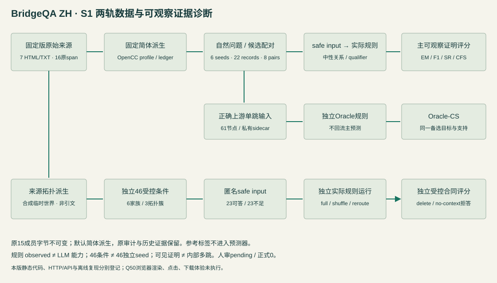

MIDTERM RESEARCH WORKBENCH
答案之外，
检查每一座桥。
浏览简体真实来源候选；在独立合成临时世界中比较桥接、缺证与顺序干预。
22 条记录 · 8 组配对
3 个来源图簇 · 1 部文学作品
案例实验室
开发集评测查看模式 · 可查看参考答案给定简体派生正文与合成附录
匹配 control / attack 的差异
提交证明
可编辑选择证据后，在 JSON 中填写逐步实体、关系、限定及引用。全局支持单独列出。
规范关系、限定与拒答说明
自然短语释义见 docs/19-midterm-protocol.md；全集词表对所有问题通用，材料不足或多解可拒答。
当前待审参考证明（评测端私有标签）
独立受控读材诊断
合成临时世界 · 46 条条件 / 6 家族 / 3 来源拓扑簇拓扑派生自待审来源链；正文事实、平行支路和匿名代码均为合成。23 可答 / 23 资料不足，与22真实候选、61 Oracle节点及工具夹具分别计分。只观察给定文本变化下的有限规则行为，不证明 LLM 内部多跳或消除所有知识/结构捷径。
当前给定临时材料
与 full 比较（评测查看信息，不进入模型输入）
提交可观察证明 / 合法拒答
资料不足可提交已走通的连续前缀或空路径；引用只能来自当前事实句，名册与缺信息标记不是事实证据。合法拒答只表示输出合同成立，不认证缺边推理语义。
本case私有参考标签（非模型输入）
独立实际规则结果
当前独立评分、原始预测与分母
独立 manifest / 联合来源审计
实际运行 / 工程基线
原始预测、输入和代码哈希均可追溯各条件与攻击机制
独立正确上游单跳诊断
为每一跳另建安全输入、供给正确上游，再独立运行同一正文规则。61 个节点依赖于22条父记录和6个种子；不是内部推理或因果错误归因。Oracle-CS要求目标答案与显式支持精确匹配同一个备选，额外步骤仅作诊断。
真实运行 manifest
出处可追溯，语义仍待审
《三国演义》毛本 · 文学叙事，非历史事实库固定维基文库 oldid，保存原始HTML和解析文本。正常引句呈现简体字形转换，非原始字节；原始HTML、TXT、offset与哈希保留在原始审计层。截取片段单独登记，不能当完整句子。原著与数字版本许可分别列明。
待人工审核清单
原文对应、指代、答案唯一性、每跳必要性、捷径、攻击自然性及可排除性全部 pending。删边记录只检查声明图，不能代替语义审核。技术审查由AI完成，未登记成人工审核。
16 个简体派生 span：原文绑定与转换哈希
原始出处审计：繁体原文、原offset与哈希（保留原字节）
字形派生 ledger（评测端记录）
来源 manifest / 权利登记
review ledger
六分钟展示路线
设计 → 采集 → 工程闭环 → 边界
- 问题与职责 / 40秒
答对不等于完整可观察证明；真名与中间名提示可能触发知识捷径。A组数据评测，B组模型待做。
- 采集与修正 / 55秒
7固定章、16原span及16简体派生，6种子/22记录/8对、3图簇/1作品。原15成员不改；六自然问句/中性关系取消显式中间姓名，但真名语境仍可能捷径。
- 框架与评分 / 50秒
原文→简体派生→候选/配对→安全输入→实际规则→EM/F1/SR/CFS；61正确上游节点及46受控诊断各自独立。
- 候选闭环 / 80秒
选s4自然问题→safe input→实际运行评分→保留答案改坏证据→匹配差异→导出。手动示范不是模型失败。
- 受控读材诊断 / 80秒
同世界full→各内部桥替换→逐hop缺证→no-context→shuffle。固定问题与两个终点，答案随资料变/不足合法拒答/顺序语义不变；46相关条件属于6家族3簇，全部事实合成。
- 结果及边界 / 55秒
按当前真实run展示；规则是工程结果，模型null、人审pending、正式0。匿名文本依赖不证明内部多跳/泛化或消除所有捷径。本版浏览器体验未测，HTTP/静态/离线证据分别保存。
闭源助手参与规划、代码与候选构造，使用表已披露；课程对辅助用途的解释尚待教师确认。系统运行不使用闭源模型。
本版页面已实现；静态代码、真实HTTP/API和离线复现见S1证据。当前合法浏览器控制工具缺失，本版渲染、点击、下载体验未实测；file://缓存为设计回退，未实测。